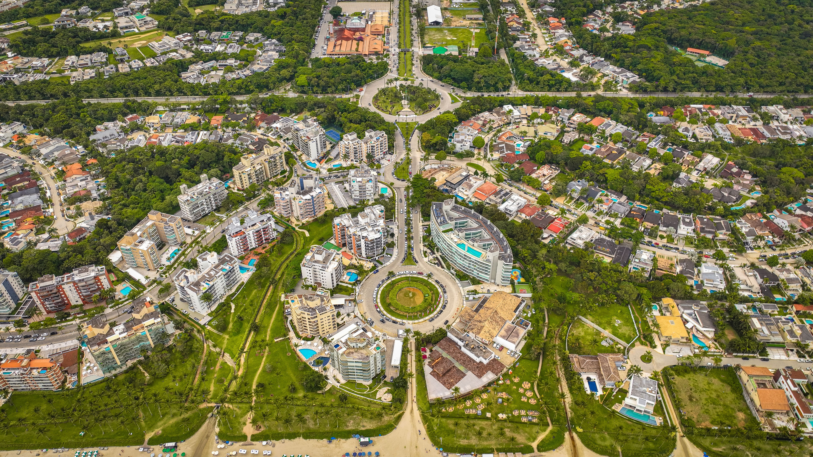
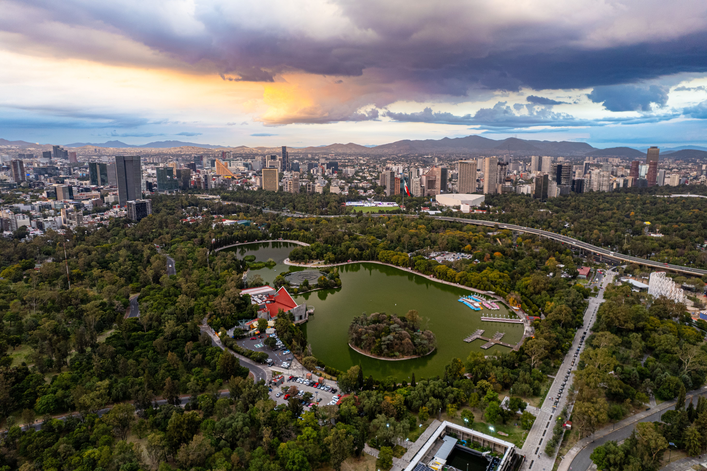
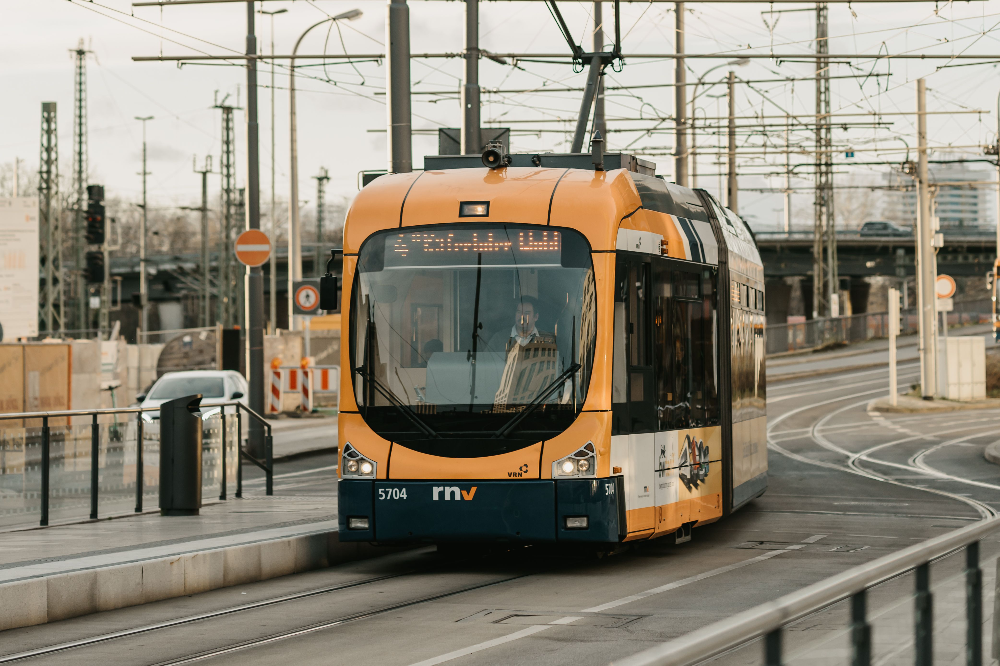
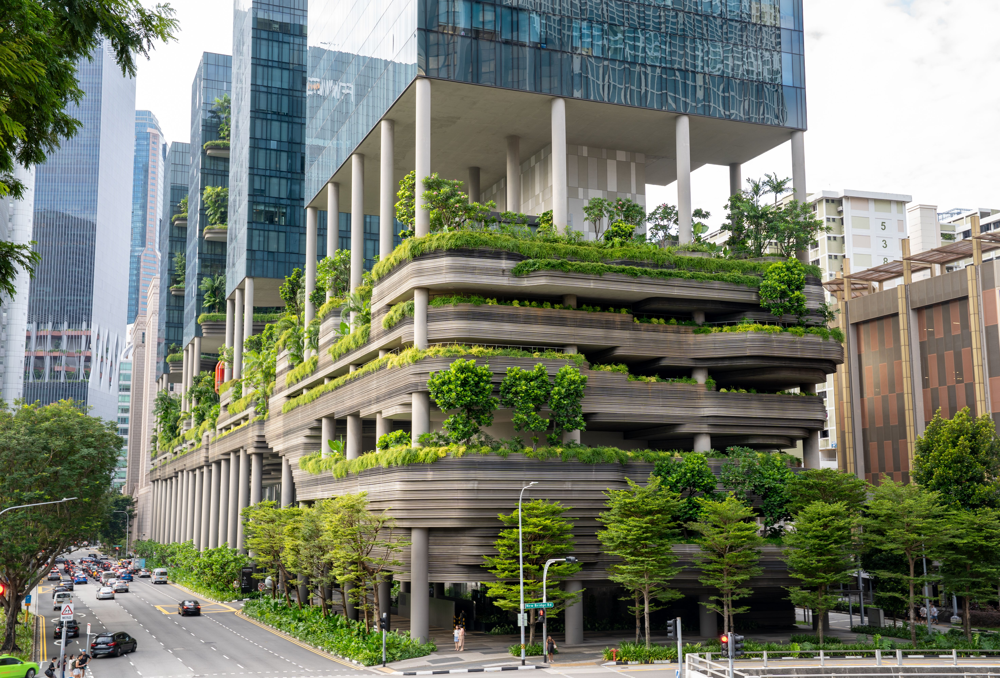

Ciudad de AURORA

Historia e Identidad de la Ciudad
Aurora es una ciudad donde la cultura, la historia y la naturaleza se encuentran. Destaca por sus amplios espacios verdes, su fuerte identidad cultural y sus propuestas adaptadas para visitantes de todas las edades.
Fundada a finales del siglo XIX por colonos que buscaban un refugio rodeado de bosque,
la ciudad creció bajo el principio del respeto por el entorno natural.
Hoy en día es un destino ideal para quienes buscan conocer nuevos lugares, disfrutar de experiencias únicas y recorrer un entorno donde convergen la arquitectura clásica y el paisajismo sustentable.
Información clave de la ciudad:
- Año de fundación:
- 1892
- Población:
- 380.000 habitantes
- Gentilicio:
- Auroriano / Auroriana
- Ubicación:
- Valle Verde, entre colinas costeras y ríos de agua cristalina
Características Principales
- Arquitectura Biofílica: Los edificios modernos integran jardines verticales, paneles solares de cristal y canales de agua salada que atraviesan las avenidas principales.
- Red de Transporte Limpio: Sistema masivo de tranvías eléctricos de alta velocidad y una red interconectada de ciclovías elevadas.
- Cinturón Verde: La ciudad está rodeada por un parque nacional protegido que impide la expansión urbana descontrolada y garantiza el aire limpio.



Barrios y Zonas

Distrito del Faro (Zona Histórica): El núcleo antiguo de Aurora. Conserva calles empedradas, casonas de madera de roble, mercados de mariscos y el faro original de 1884, hoy convertido en centro cultural.

Valle de Cristal (Zona Tecnológica y Comercial): Epicentro de startups, empresas de diseño y torres corporativas sustentables con fachadas traslúcidas.

Las Cantoras (Barrio Bohemio): Zona residencial de artistas, galerías independientes, talleres de cerámica y cafés al aire libre situados frente a los acantilados.

Puerto Sereno (Zona Residencial Costera): Complejos urbanos modernos con muelles privados, paseos marítimos y playas de arena oscura.